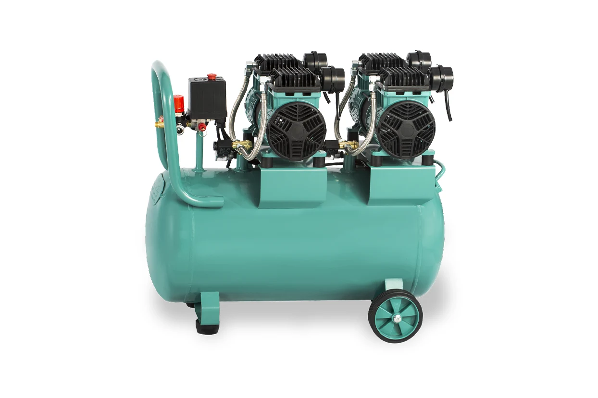

50 lt Yüksek Emişli Yağsız Teknoloji Hava Kompresörü - GPY 1500
GPY 1500- Yüksek Emişli ve Yağsız
- Selenoid Valf Sistemi
- 2 Filtreli
- Ses Düzeyi
- Ergonomik Dizayn
| Depo Hacmi | 50 lt |
|---|---|
| Güç | 1500 W/2 Hp |
| Hava Emişi | 350 lt/dk |
| Basınç | 8 Bar |
| Voltaj | 220 V |
| Devir | 2800 r/dk |
| Ölçüler | 2 Hp |